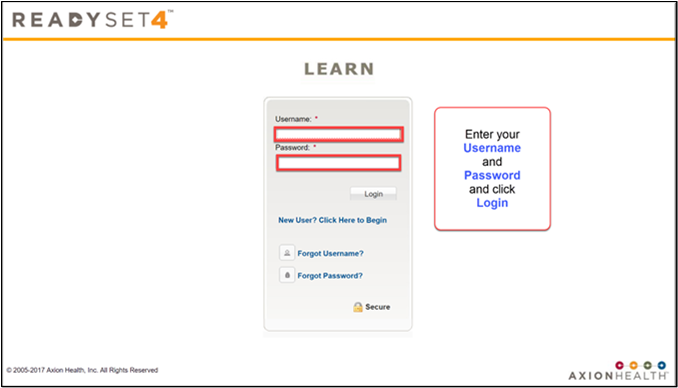
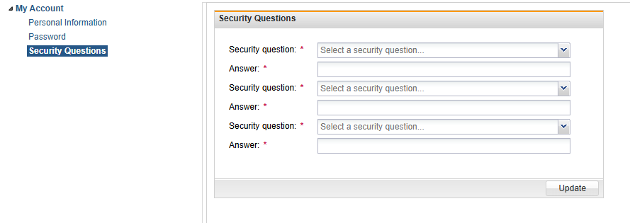

Adding and Updating Security Questions in My Health
You can add security questions in My Health for added security. To add or update security questions, do the following:
- Log in to ReadySet with your credentials.

- Click the User Settings tab.
- Under My Account, click Security Questions.
- Use the drop-down to select a question and enter an answer.
- Repeat for the other questions.
- Click Update.
